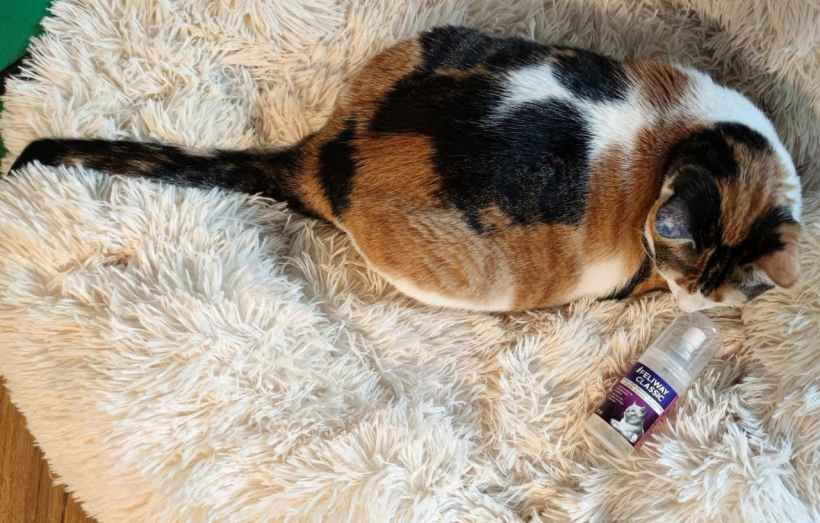
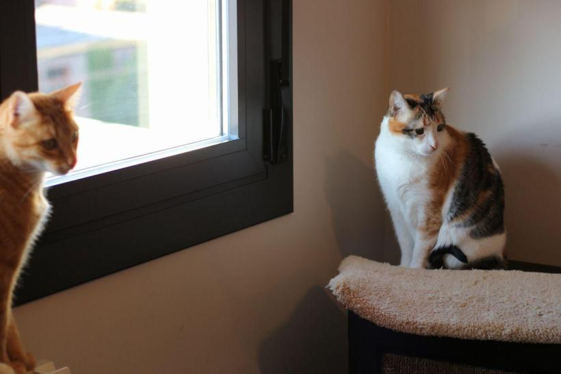
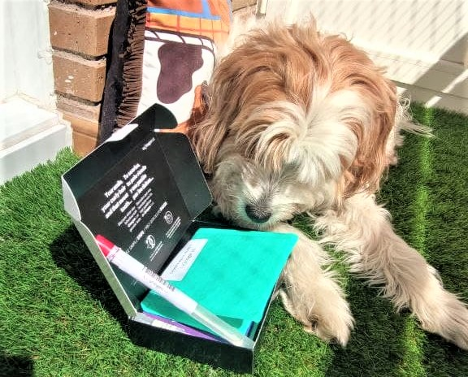
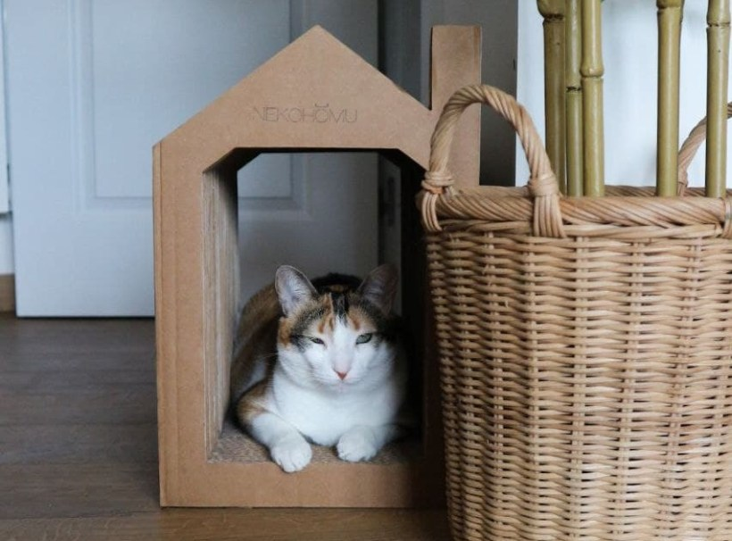

Descubre los formatos de Feliway y cuándo usar cada uno
14 noviembre, 2021
Feliway es una de las marcas que prácticamente todos los que conviven con gatos conocerán porque sus productos, creados a partir del estudio de las feromonas felinas, son un recurso muy útil para ayudar a nuestro gato a enfrentarse a distintas situaciones. La gama de productos Feliway abarca 4 variedades, […]

Cómo podemos ayudar a nuestro gato a ser feliz
29 octubre, 2021
Hemos hablado varias veces sobre la importancia de elegir correctamente el arenero, el rascador, los juguetes y el resto de accesorios de nuestros gatos así como la necesidad que tienen de que pasemos tiempo con ellos pero, en muchos casos, sigue sin entenderse lo mucho que influye el conjunto de […]

¿Conoces los Test de ADN para perro? Analiza más de 200 enfermedades
20 octubre, 2021
Lucca apareció en Málaga hace ya 8 años y no sabemos de dónde viene. La raza es algo que nunca me ha preocupado, pero es cierto que cada una suele tender a tener unos problemas de salud en los que podemos poner más atención en las revisiones veterinarias. ¿Te imaginas […]

¿Qué necesita un gato cuando llega a casa? Analizamos los accesorios básicos
14 octubre, 2021
Cuando adoptamos a Zelda estábamos totalmente perdidos ¿Qué accesorios necesita un gato? Llegó de repente, apareció en uno de nuestros paseos y la llevamos a casa sin tener nada preparado así que tuvimos que correr al veterinario a hacerle un primer chequeo y comprar las cosas básicas. Los gatos que […]